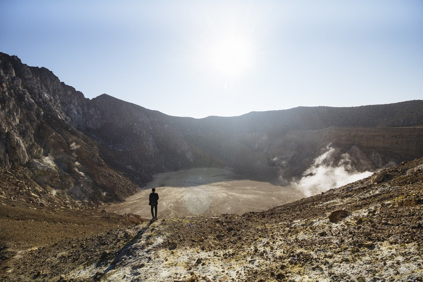

Gunung Egon
Kabupaten Sikka, Nusa Tenggara Timur | 1,073 MDPL
Salah satu indikasi dari seberapa dahsyat letusan yang pernah terjadi pada sebuah gunung berapi dapat dilihat pada kawah yang ada pada gunung tersebut.
Gunung Egon yang terletak di Kecamatan Waigete, Kabupaten Sikka, Pulau Flores, Nusa Tenggara Timur menyimpan bukti letusan dahsyat yang pernah terjadi, dengan adanya sebuah kawah luas menganga lebar yang akan menimbulkan rasa takjub bagi siapapun yang melihatnya. Gunung Egon sendiri berada di wilayah timur dari Maumere atau sekitar tiga puluh kilometer dari ibu kota Kabupaten Sikka tersebut.
Pada awal tahun 2016, status Gunung Egon dinaikkan menjadi “siaga” akibat dari aktivitas vulkanik yang meningkat pada saat itu. Gempa juga dirasakan para warga setempat yang tinggal tepat di kaki Gunung Egon. Letusan dahsyat terakhir gunung ini terjadi pada tahun 1925 dan letusan terakhirnya terjadi pada tahun 2008 lalu. Walaupun aktivitas vulkaniknya seringkali meningkat dan menimbulkan keresahan, dalam kondisi normalnya gunung ini merupakan salah satu gunung favorit bagi para pendaki yang berkunjung ke Nusa Tenggara Timur.

Dengan ketinggian 1.703 meter di atas permukaan laut, Gunung Egon tentu menyuguhkan pengalaman petualangan yang seru bagi para pendaki yang berkesempatan menginjakkan kaki di gunung ini. Tersedia dua akses pendakian bagi para pendaki yang ingin bercengkerama langsung dengan suasana alam Gunung Egon. Pendakian dapat dimulai dari Posko Pengamatan Gunung Egon atau dari Desa Blidit. Untuk mencapai lokasi dari Gunung Egon, para pendaki dapat menempuh perjalanan dari tiga wilayah yang langsung berbatasan dengan Kabupaten Sikka yaitu Kabupaten Ende, wilayah Flores Timur, dan Kabupaten Ngada.
Di punggungan pertama sebelum sampai di bibir kawah, terdapat beberapa alat untuk mendeteksi aktivitas gunung api ini. Dari lokasi tersebut, para pendaki cukup melewati satu punggungan yang cukup terjal untuk sampai di bibir kawah Gunung Egon. Selain luas kawah yang menjadi sisa letusan, dari salah satu sisi Gunung Egon juga terdapat semburan asap panas yang menandakan aktivitas vulkanik dari gunung berapi yang satu ini.